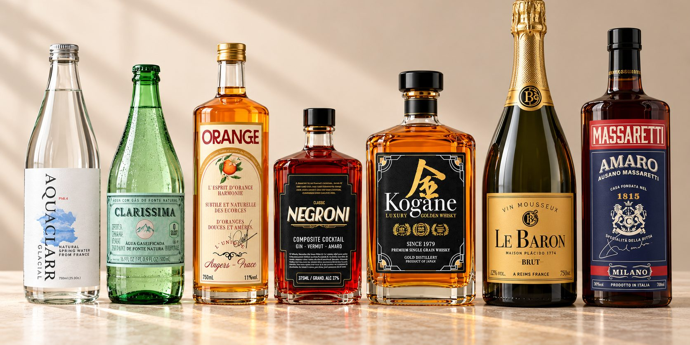
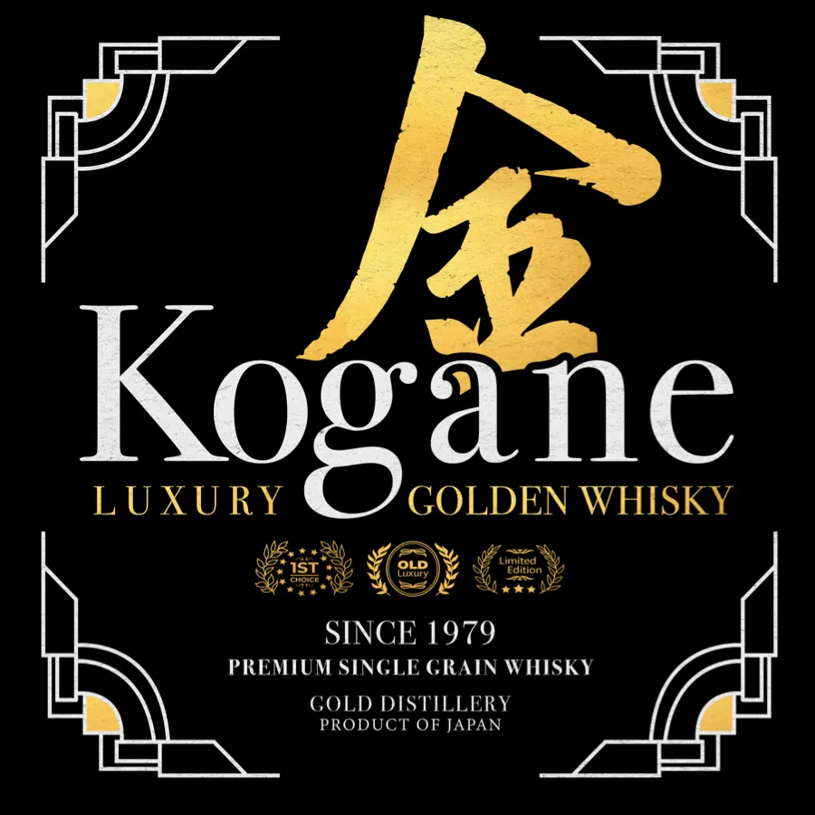

Case 26 · Design gráfico de cena · Publicidade
No filme da RAM, de 2023, o bar aparece por um instante, com a prateleira cheia de garrafas. Cada uma precisava de um rótulo, e cada rótulo, de uma marca: 18 bebidas inventadas, de uísque japonês a água mineral francesa, com medida de impressão no nome do arquivo.

01 · Comercial
No filme da RAM, há um corte rápido para dentro de um bar, com a prateleira cheia de garrafas atrás do barman. O botão abaixo pula direto para esse instante.
02 · Rótulos
Uísque japonês, amaro de Milão, espumante de Reims, bourbon do Kentucky, tequila reposado, gin, vodca e água mineral: todas inventadas. Cada uma tem país de origem, ano de fundação, teor alcoólico e texto miúdo, como um rótulo de verdade. Num deles, o sobrenome do designer virou a casa produtora: Maison Placido, 1774.

03 · Nas garrafas
No comercial, a prateleira fica no escuro e passa rápido. Esta montagem mostra sete dos rótulos no tamanho de uma garrafa.